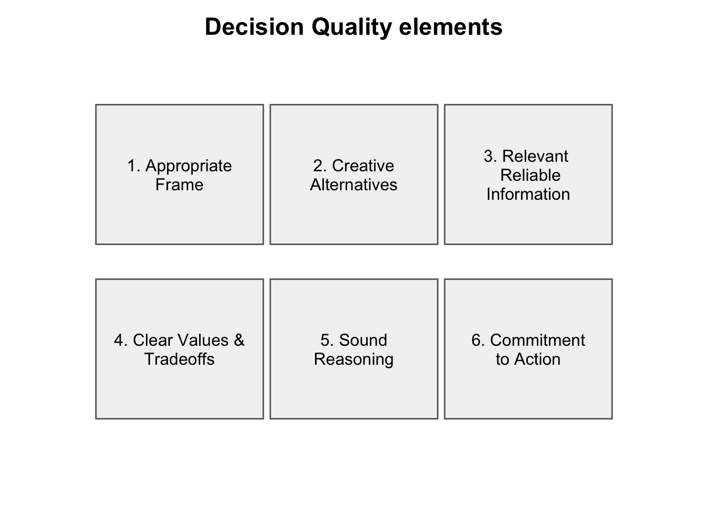
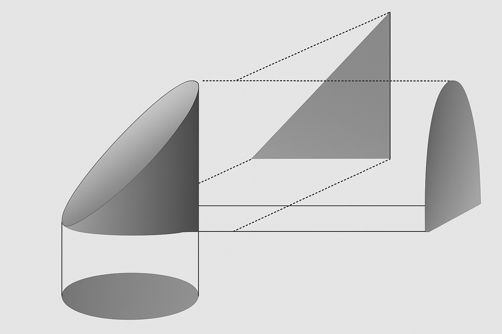
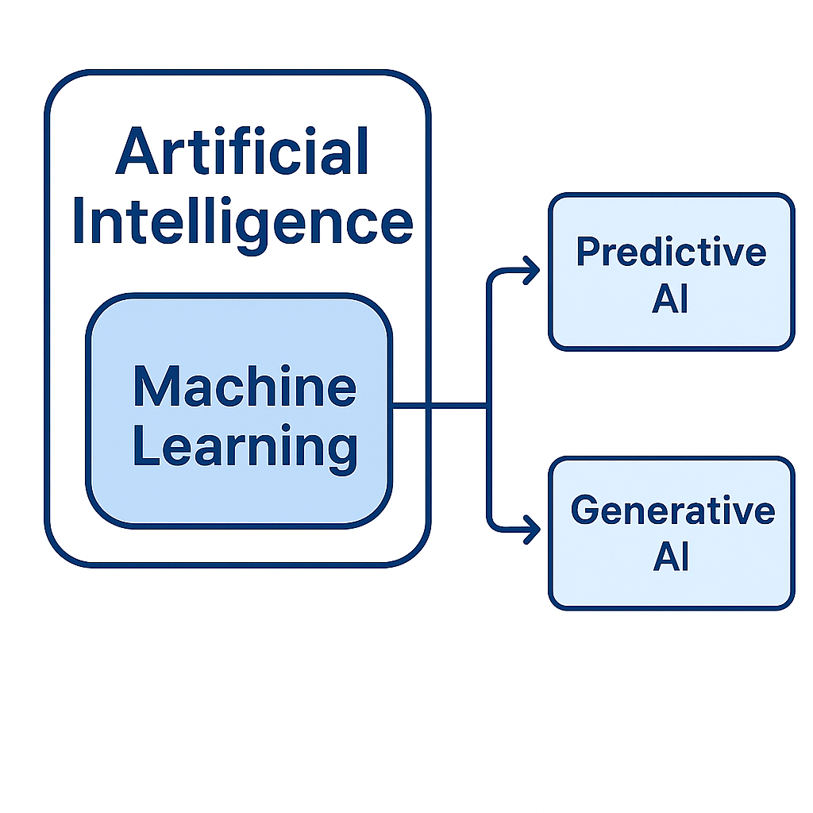

1 Introduction to AI and Machine Learning
1.1 Introduction
1.2 Data era
This is an introductory chapter about data and data modelling for evidence based actions, decisions and policy making with a particular interest in advanced therapeutic technologies. Data are representations of facts, observations, or measurements structured or unstructured that describe the attributes or states of objects, events, or phenomena. They are symbols or signals without inherent meaning until interpreted within a context or combined with other information. In scientific and computational contexts, data are typically considered the raw inputs from which information and knowledge are derived through processes of organization, analysis, and interpretation. Data can assume several different forms including, numeric readings from a sensor, characters in a database, or pixels in an image, text in a message, electronic information, sequence of bases in DNA and RNA, etc. Data are evidence of our immediate reality and contexts therefore being crucial for fact based argumentation.
We live in an era of explosion in the availability of data, driven by the rapid expansion of the internet, advances in computational power, and the massive growth of digital storage and connectivity devices . Over recent decades, the cost of computing and storage has plummeted while the ability to collect, transmit, and analyze information has risen exponentially; in many domains, the data generated in the last few years surpass those produced in all prior human history (Hilbert and López 2011; Stephens et al. 2015). Historical analyses of data production and storage capacity show orders-of-magnitude increases year over year, reshaping how science, industry, and society operate, imposing almost naturally a new data driven paradigm (Hilbert and López 2011).
A particular example of transformative shift is the omics era in the life sciences, a period in which substantial amount of data has been produced in genomics, transcriptomics, proteomics, metabolomics, implying in massive, complex datasets capturing biological systems in high resolution (Stephens et al. 2015; Hasin, Seldin, and Lusis 2017). Similar surges occur across disciplines from astronomy to agriculture and environmental monitoring where instruments and sensors continuously collect structured and unstructured data at scales that exceed traditional analytical capacities (Stephens et al. 2015).
In health care, data streams such as electronic health records (EHR), laboratory tests, medical imaging, wearable sensors, and omics profiles create a multidimensional view of patients (Jensen, Jensen, and Brunak 2012; Hripcsak and Albers 2013). The later kind of view can be integrated and enhanced with the possibilities of contrasting omics and biological data with other sources including social economic information bringing an opportunity for new solutions in health care.
A particular challenge and frontier of data era is the need for integration and to fuse heterogeneous sources into coherent, trustworthy insights for predictive modeling, personalized treatment, and clinical decision support (Raghupathi and Raghupathi 2014; Karczewski and Snyder 2018; Jensen, Jensen, and Brunak 2012). Such an integration can enhance outcomes while maintaining safety, fairness, and transparency (Topol 2019) when done responsibly.
Several concepts, and ideas can help us to understand and navigate this complex landscape of data sourcing, storing, processing and modelling for evidence actions. The rest of this chapter will cover these topics.
1.3 Sources of data
AI and machine-learning methods depend fundamentally on the quality and nature of the data used to train them. In health sciences and particularly in the field of Advanced Therapeutic Technologies (ATT), data can emerge from a wide range of processes, yet most of them can be meaningfully grouped into two broad classes: observational and experimental. Understanding the differences between these types is essential because each one carries specific strengths, limitations, and implications for modelling and decision-making.
Observational data arise from situations in which no intervention is imposed by the researcher; instead, information is simply recorded as it naturally occurs in clinical or biological settings. Much of modern health data falls into this category. Electronic health records, for instance, routinely capture demographic information, laboratory results, diagnoses, procedures, and medication histories as part of everyday clinical care. Wearable sensors provide continuous streams of physiological measurements such as heart rate, oxygen saturation, sleep quality, or activity levels, reflecting the patient’s lived environment rather than a controlled experiment. Medical imaging repositories CT, MRI, ultrasound, histopathology are also observational in nature, as they document the state of the patient without manipulating it. Registries, whether for cancer, transplantation, rare diseases or adverse events, add another important layer, offering longitudinal and population-level perspectives. In ATT contexts, observational data play a crucial role in understanding real-world performance of new therapeutic technologies, monitoring long-term safety after regulatory approval, and identifying predictors of treatment success or failure within routine clinical practice.
In contrast, experimental data are generated in controlled settings where a researcher actively intervenes by assigning treatments, conditions, or exposures according to a predefined design. This category encompasses a wide spectrum of studies, from early in vitro experiments and animal models to human clinical trials. For example, before a new gene or cell therapy reaches patients, it undergoes a series of structured tests designed to quantify biological response, evaluate safety profiles, and characterize potential off-target effects. Controlled laboratory experiments may examine cellular behavior when exposed to a regenerative biomaterial or probe the efficiency of a CRISPR-based gene-editing protocol. Preclinical in vivo studies evaluate therapeutic effects and toxicity under standardized conditions. At the clinical end of the spectrum, randomized controlled trials compare one treatment against another (or against standard care) under carefully regulated environments, providing the most rigorous evidence for causality. These experimental datasets form the backbone for regulatory assessments in ATT, supporting decisions related to trial approval, dosing strategies, safety monitoring, and eventual market authorization.
Although observational and experimental data differ in structure and purpose, they are deeply complementary. Observational data offer a broad, naturalistic view of patient populations and allow researchers to capture the complexity of real-world clinical behavior. Experimental data provide the depth and rigor needed to establish causal relationships and quantify the true therapeutic effect of an intervention. In practice, robust AI and ML applications in health care frequently rely on both. Predictive models developed from observational data may later be validated or even refined using experimental evidence. Similarly, insights from experimental studies often guide the design of models applied to real-world datasets. Together, these data sources provide a foundation on which trustworthy, transparent, and clinically meaningful AI systems can be built.
1.4 Models
The definition of what is a model is the first useful conceptual tool we will discuss intuitively with the example depicted in Figure 1.1. In the center right of the Figure we have a cylinder that was cut in half and which could be represented in different manners, including, the obvious half cylinder, but also as triangle, an ellipsis and a semi-ellipsis, depending on the point of view. If we consider the cylinder as the reality we want to represent, we see that we have at least three different possible representations. The word representation has an interesting synonym: model. Thus, models can be understood and seen merely as representations of a given situation we want to represent. Figure 1.1 is a didactic example that also brings to our perception the fact that for each situation we may have different possible models with different structures and characteristics, with the implication that such models are comparable regarding their capacity to represent reality. Another important point about models is that they are built based on assumptions, e.g, we assume that the structure of the cylinders is not modified when we are creating the models, and that we can represent a 3-D structure with a 2-D figure. When creating models we should be always aware of our assumptions and of the need to check if they are valid in the particular situation we are addressing.

Once a model is basically a representation it can be built in several different manners including figures, flowcharts, and with the usage of equations and other statistical mathematical tools. Consider the dataset att_demo2 in Table 1.1 containing observations of 5 patients regarding a heart condition (health or Heart Condition), the level of activity (rest or moderate), the age in years, the heart rate in bpm and saturation per oxygen (spo2). As discussed in the first section of the chapter this dataset is factual evidence about the patients, representing a reality about they health status (their reality statuts), the equivalent to the half cyllinder in our Figure 1.1. For this dataset, we could creat different possible representations depending on our goals, particularly, statistical and mathematical representations. Suppose we want to explain the heart rate and spo2 using the rest of information in the dataset, we could describe this notation with the following notation:
\[ (hr,\, spO_2) = f(\text{condition},\, \text{activity},\, \text{age}) \tag{1.1}\]
The model/representation in Equation 1.1 is a specific example of a generic model in which we say that the heart rate and saturation of patients are a function of their heart condition, level of activity and age. Equation Equation 1.1 for now is an example of a mathematical function (we assume no error). We could create another representation like in Equation 1.2, and assume that we also have an error implied in using condition, activity and age to explain, heart rate and spo2, in that case we have a statistical model.
\[ (hr,spo2)=f(condition,activity,age) + error \tag{1.2}\]
Major part of the rest of this book will be dedicate on different ways to define the function that will be connecting the things we want to explain with we use to explain them.
In this section we learnt that models are representations we use to assess a reality, situation or context, passible to be comparable. We also learnt that we can use equations to create models based on datasets.
att_demo2 patient_id heart_condition activity age_years heart_rate_bpm spo2_percent
1 P01 Healthy Rest 52.4 73 98.9
2 P02 HeartCondition Moderate 73.1 88 93.4
3 P03 HeartCondition Rest 61.2 73 95.8
4 P04 HeartCondition Moderate 36.0 90 94.0
5 P05 Healthy Rest 53.7 72 98.01.5 Decisions
In an analogous manner we will introduce the idea of decision using first an intuitive example. Consider Figure 1.2 that depicts a crossroad in which some different routes can be chosen when someone is travelling and stopping at the stop signal. After the STOP one can turn to the left, turn to the right, go ahead, reverse and come back, etc.
The case in the Figure Figure 1.2 brings to our mind some core notions. First we have a state of ambiguity between different routes, each of these routes will bring us to different places, when reaching the crossroad we may know exactly or not the outcomes of each of the routes, etc. Generally speaking we say that we have some ambiguity in the courses of action we can take, because at a single moment we can take only one of them and not all of them at the same time, we have different alternatives of choice, each of them leading to a consequence regarding our journey.

Formalizing the ideas discussed in the previous paragraph we can say, following (White 1970), that a decision is a cognitive process \(\theta\), clearly identifiable, that resolves a state of ambiguity \(Q\) within a state of knowledge \(K\), such that \((Q, K) \rightarrow q \in Q\), where \(q\) is a possible alternative within the state of ambiguity. Formalizing the ideas illustrated in the crossroads example, we can express the act of choosing a route as a decision process in White’s sense. In the case of the crossroads, \(Q\) corresponds to the set of possible paths available to the traveler, and \(K\) represents the traveler’s knowledge or expectations about the consequences of each path perhaps partial, uncertain, or even incorrect. The cognitive process \(\theta\) is the mechanism by which the traveler evaluates this information and selects one route, \(q\), from among the available alternatives. Thus, the simple act of deciding which way to go operationalize the theoretical construct of decision-making: resolving ambiguity under a given state of knowledge to produce a concrete action.
Examples in health care and advanced therapeutic technology include:
- Select a treatment strategy for a patient using clinical history, imaging, genetics, and comorbidities.
- Design and optimize clinical trials (inclusion criteria, dose/regimen, endpoints, adaptive rules).
- Choose a therapeutic modality (gene therapy, cell therapy, device, pharmacological intervention) for a given indication.
- Initiate/continue/discontinue therapy based on longitudinal biomarkers, response, and adverse events.
- Integrate multi-omics evidence (genomics, proteomics, metabolomics) to guide precision medicine.
- Allocate scarce resources (ICU beds, organs, specialized equipment) under ethical and operational constraints.
- Assess risk–benefit and cost-effectiveness for adopting a new drug, device, or regenerative technology.
- Determine optimal dosing/delivery via PK/PD modeling, model-informed precision dosing, or digital-twin simulation.
- Prioritize R&D pipelines based on clinical potential, unmet need, feasibility, and budget impact.
- Evaluate AI decision-support systems for safety, interpretability, bias/robustness, and regulatory compliance.
Different theories approach decisions via different methods but can be broadly aggregated in the three main classes depending on how the \(\theta\) process is addressed Bell, Raiffa, and Tversky (1988).
| Characteristics | Normative Models | Descriptive Models | Prescriptive Models |
|---|---|---|---|
| Decision approach (\(\theta\)) | Axiomatic, based on rational principles and expected utility theory. | Describe how the decision process actually occurs. | Focus on how to decide well given cognitive and practical constraints. |
| General dynamics | How people should ideally make decisions. | How people actually make decisions, including cognitive limitations. | How people can act to make better decisions. |
| Areas of use and examples | Microeconomics (expected utility paradigm), contingent state insurance. | Cognitive psychology (heuristics, biases, bounded rationality). | Engineering, risk and uncertainty management, operations research. |
From the different approaches proposed in Table 1.2 we will give a particular focus on the prescriptive approaches specifically in one named Decision Analysis.
1.5.1 Decision Analysis
Decision analysis is a science that develop methods allowing the application of results from decision theory and elements from normative, prescriptive, and descriptive models to the solution of practical problems (Howard 1988). The main objective of this tool is to support the construction of sound decisions, given the cognitive and contextual realities of decision makers. In this sense, the field can also be referred to as decision engineering Sarti (2013).
- What exactly is the decision problem, and how should it be modeled?
- What are the possible alternatives, and how can they be identified?
- Which variables should be included in the analysis?
- What level of detail should the analysis consider?
- How much should be invested, and what is the nature of the information to be used?
- How can the uncertainties involved be modeled?
- How can the decision problem be clearly communicated?
- How can the principles of decision theory be applied to the resolution of practical problems?
Howard (1988) and Sarti (2013) describe the concept of a decision basis as a tool for addressing the questions outlined above and illustrated in Figure . The concept consists of a set of information, denoted as \(BD\), in which the alternatives, consequences, and uncertainties or risks associated with a decision are made explicit. The decision basis can be implemented through tables, graphical parameters, or, more formally, by means of influence diagrams and decision trees. The construction of the decision basis should be an iterative process, carried out until sufficient information has been gathered to support a decision. The dynamics of formulating the decision basis and the agents involved in the process are summarized in Figure 1.3. In this figure, we can observe that the process of analysis and construction of the decision basis begins with a state of obscurity regarding the problem.
From that point, the technical experts, the analyst, and the decision makers act in an integrated manner, complementing their expertise with the available literature related to the issue.
Through this exchange of knowledge emerges the foundation for building the decision basis, which makes explicit the alternatives, consequences, preferences of those involved for each alternative, and the associated uncertainties. The process should be repeated iteratively until a decision is reached.

Spetzler, Winter, and Meyer (2016) further develops the notion of decision basis proposing a whole cycle of decision quality as implemented via six elements: 1) Appropriate framing, 2) Creative Alternatives, 3) Relevant and Reliable Information, 4) Clear Values and Trade Offs, 5) Sound Reasoning and 6) Commitment to Action. Going through these six steps when approaching a decision helps us to avoid common pitfalls and biases of judgement.
Step 3 in the last sequence involves the usage of relevant and reliable information, implying in the need for data and good representations of data, therefore, good modelling strategies, for achieving good quality decisions. This step is the conceptual motivation of models as decision support tools and main practical motivation for our course.
1.6 Defining ML and AI
In the last sections of this chapter we had motivated and illustrated the reasons why we need to dedicate our time to learn how to create models or representations of data. We learnt that models are important information providers being key for the quality of decision making. In this section, we will define what is Intelligence, Artificial Intelligence and Machine Learning and show how these techniques can classified regarding the tasks they realize and much more interesting things.
1.6.1 Intelligence
1.6.1.1 Etymological and philosophical perspectives
Etymologically, the word intelligence derives from the Latin intelligere, meaning “the capacity to comprehend or understand,” formed from inter (“between”) and legere (“to read” or “to choose”). Philosophically, intelligence has often been linked to the capacity for apprehending truth, understood as the correspondence or coincidence between facts and ideas.
An interesting nuance in this philosophical view is that intelligence and thought are not identical. We often think without necessarily judging whether something is true or false. Thought can operate freely in imagination or association, whereas intelligence involves an orientation toward truth and understanding. This distinction also separates intelligence from mere skills or procedural abilities, philosophically speaking intelligence implies discernment, not only execution.
1.6.1.2 Computer science perspective
From a computational standpoint, machines do not possess intelligence in the philosophical sense. Computers are fundamentally symbol-manipulating systems: they operate on data according to predefined rules, algorithms, and formal structures, without awareness or access to meaning. What we call machine intelligence (as in Artificial Intelligence and Machine Learning) refers to the ability of systems to perform tasks that, for humans, require cognitive effort such as recognizing patterns, making predictions, or generating language. However, these systems do not understand or apprehend truth; they only evaluate consistency or likelihood within the frameworks they are programmed with or have learned statistically.
In formal logic or mathematics, a computer can determine whether a statement is derivable or satisfiable according to given axioms but not whether it is “true” in an absolute or semantic sense. In empirical contexts, it can approximate “truth” through probabilistic inference based on data, but that remains a syntactic or statistical notion of truth, not a semantic or philosophical one. Thus, from a computer science perspective, truth is always relative to a system of rules, models, or data, while human intelligence seeks truth as correspondence between thought and reality.
1.6.1.3 Artificial Intelligence
1.6.1.3.1 Definition and Scope
Artificial Intelligence (AI) can be broadly defined as the field of study and practice dedicated to creating systems capable of performing tasks that, if carried out by humans, would require cognitive processes. This includes perception, reasoning, learning, language understanding, decision-making, and problem-solving. AI is not a single technology but a multidisciplinary domain that integrates computer science, mathematics, cognitive psychology, statistics, linguistics, and philosophy. In practical terms, AI systems operate by processing inputs (data) through computational models designed to produce outputs that emulate aspects of human cognition for instance, recognizing an object in an image, predicting the outcome of a treatment, or generating coherent text.

Classic examples of AI applications include:
Expert systems that replicate human decision-making in domains such as medicine or engineering;
Speech and image recognition systems such as digital assistants or facial recognition software;
Autonomous systems such as self-driving vehicles or robotic surgery;
Natural language processing applications such as machine translation, chatbots, and summarization tools.
1.6.1.4 Machine Learning
Machine Learning (ML) is a core subfield of AI focused on building models that learn from data. Instead of being explicitly programmed with step-by-step rules, ML methods discover patterns, relationships, or functions from examples, allowing them to make predictions, classifications, or decisions when confronted with new data. The building block of machine learning methods are algorithms that consist in sets of rules and steps that method needs to do to performe a task. In short we can also say that machine learning is a context in which a machine learns to perform a task in the presence of data and improves its performance the more data we offer.

In a typical ML workflow, a model is trained on a dataset where both inputs and desired outputs are known (the training phase), and its performance is later evaluated on unseen data (the testing phase). Through iterative optimization, the model adjusts internal parameters to minimize prediction errors.
Examples of ML applications include:
Predicting disease risk from medical records;
Classifying tumor images as benign or malignant;
Recommending personalized treatments or products;
Forecasting energy demand or environmental variables;
Detecting fraud in financial transactions.
ML methods can be supervised (trained with labeled outcomes), unsupervised (discovering structure without labels, e.g., clustering), or reinforcement-based (learning by trial and reward) ?fig-ml_classes. We will discuss what these terms mean when detailing the anatomy of a ML method in a future section.
1.6.1.5 Predictive and Generative AI
The recent expansion of AI can be viewed through two complementary paradigms: predictive AI and generative AI.
Predictive AI focuses on forecasting outcomes or estimating probabilities based on existing data. It aims to answer questions such as “What will happen next?” or “What is the most likely class or value?”. In our course predictive AI will be sometimes referred merely as Machine Learning and vice versa.
Examples:
Predicting patient readmission risk in healthcare;
Forecasting market behavior or demand in economics;
Anticipating equipment failure in industrial systems.
Predictive models rely on statistical and ML techniques (e.g., regression, decision trees, ensemble methods, neural networks) to generalize patterns from past data to future cases.
Generative AI, in contrast, focuses on creating new data that resemble observed patterns. These systems learn the underlying structure of their training data and then generate plausible new instances, such as text, images, code, or molecular structures.
Examples:
Large Language Models (LLMs) that produce human-like text;
Generative Adversarial Networks (GANs) that create realistic images;
Variational Autoencoders (VAEs) that synthesize complex data distributions;
Text-to-image models used for design, art, and simulation.
Generative AI represents a major shift from systems that merely predict to systems that can synthesize and imagine, extending AI from decision support to creative collaboration.
1.7 Bridging Predictive and Generative Paradigms
While predictive AI is predominantly analytical, generative AI is synthetic. In practice, modern intelligent systems often integrate both: generative models can simulate scenarios for decision-making, while predictive models can assess the likelihood or impact of those simulated outcomes.
In the context of Advanced Therapeutic Technologies (ATT) and health sciences, this convergence allows AI not only to anticipate risks and outcomes but also to propose new molecules, optimize treatment protocols, and design personalized therapeutic strategies.
1.8 More on Models for data and anatomy of an AI method
We will use again the dataset in Table 1.1 to illustrate a general scheme we will use for the rest of the book and to introduce some other key terms and jargon.
patient_id heart_condition activity age_years heart_rate_bpm spo2_percent
1 P01 Healthy Rest 52.4 73 98.9
2 P02 HeartCondition Moderate 73.1 88 93.4
3 P03 HeartCondition Rest 61.2 73 95.8
4 P04 HeartCondition Moderate 36.0 90 94.0
5 P05 Healthy Rest 53.7 72 98.0Each row in a dataset is called an instance, and each column represents a feature (or variable). Depending on the goal of the analysis, some features can be used as predictors (inputs), or explanatory variables, and others as responses (outputs) or responses. Sometimes we may refer to a variable as a label, the known value of the output (response) that we want a model to predict.
Our dataset example can be viewed from a modelers point of view line in Figure 1.5.

In the case each Y in Figure 1.5 is modelled alone we have an uni-response model and in the case they are modeled simultaneously we say it is multi-response.
Machine learning tasks are classified in supervised, unsupervised, reinforcement and generative tasks. All methods share a general anatomy consisted of the data and motivational context, the task the algorithms perform, and measures of performance. Whenever studying a method we will use always describe it in this context of data, algorithm and performance.

The features are also classified into
| Feature Type | Definition | Example from Model | Explanation |
|---|---|---|---|
| Categorical | Variables that represent distinct groups or classes with no inherent order. | condition = {Healthy, HeartCondition}; activity = {Rest, Moderate} |
These describe qualitative differences between individuals. One level is not “more” or “less” than another only different. Encoded typically as dummy variables (0/1). |
| Ordinal | Variables that have a clear, ranked order, but where differences between levels are not necessarily uniform. | e.g., if activity were coded as {Rest < Moderate < Vigorous} |
Here, the order matters “Moderate” implies higher exertion than “Rest” but the distance between levels is undefined. These often appear in surveys or clinical scoring scales (e.g., pain level: mild < moderate < severe). |
| Continuous | Variables measured on a numeric scale with meaningful and consistent intervals. | age (in years) |
The differences are measurable: a 10-year increase has the same quantitative meaning regardless of where it occurs (e.g., 40→50 vs 60→70). Continuous variables allow arithmetic operations and smooth modeling (e.g., linear effects). |
In the simulated dataset:
heart_conditionandactivityare categorical.age_yearsis continuous.- If an ordered variable (like “disease severity” or “activity level”) were added, it would be ordinal.
1.8.0.0.1 Supervised Learning
Uses labeled data: inputs (features) + known output (label).
- Goal: learn a mapping from features → label.
- Example: Predict
heart_condition(Healthy vs HeartCondition) fromactivity,age_years,heart_rate_bpm,spo2_percent - Typical algorithms: Logistic regression, random forest, SVM, neural networks
- Output: class label or numeric value (classification/regression).
1.8.0.0.2 Unsupervised Learning
Uses unlabeled data: only features, no target.
- Goal: find structure/patterns (clusters, components).
- Example: Cluster patients by
heart_rate_bpm,spo2_percent,age_yearsto reveal low/high-risk profiles without usingheart_condition.
- Typical algorithms: k-means, hierarchical clustering, Gaussian mixtures, PCA.
- Output: groupings, embeddings, or density estimates.
1.8.0.0.3 Reinforcement Learning
An agent interacts with an environment and learns via rewards/penalties over time.
- Goal: learn a policy that maximizes long-term reward.
- Example: A wearable adjusts activity level to keep
spo2_percentandheart_rate_bpmin range; rewards for healthy ranges, penalties otherwise.
- Typical algorithms: Q-learning, DQN, policy gradients.
- Output: policy for sequential decisions.
1.8.0.0.4 Generative Learning
Learns the data distribution to create new, realistic samples.
Goal: model (p()) and generate synthetic data.
Example: Create synthetic patient records with plausible
heart_rate_bpm/spo2_percent/activitycombinations for testing or augmentation.
Typical algorithms: VAEs, GANs, transformer-based models.
Output: new samples; also used for simulation, augmentation, imputation.
1.9 Introduction to model comparison
So far we have learnt that models are representations of a given reality, which in AI contexts, relate to supervised, unsupervised, reinforcement and generative tasks. Intuitively, we also learnt from Figure 1.1 that for a same given reality we can have different models. In this section we will address the matter of how to compare the different possible machine learning methods for the same situation.
In our efforts, we will consider that the best model is the one that most accurately learns and represents the reality it is intended to approximate. To assess this, we rely on performance metrics that quantify how closely a model’s outputs align with the true or expected outcomes.
In supervised learning, these metrics measure the discrepancy between predicted and observed values for instance we use concepets like accuracy, precision–recall, ROC-AUC for classification, or RMSE and MAE for regression. In unsupervised learning, where there are no predefined labels, we instead evaluate how well the model captures underlying structure, using metrics such as silhouette score, cluster purity, or reconstruction error.
In reinforcement learning, performance is gauged by the cumulative reward obtained through interaction with the environment, reflecting how well the agent learns optimal decisions over time.
Finally, in generative modeling, evaluation focuses on fidelity, diversity, and realism of the generated data, often through metrics like FID (Fréchet Inception Distance), likelihood, or domain-specific validation.
In the next chapters when discussing the different methods we will always refer to metrics of model performance and how they could be used to select best models for a given situation.
We also can compare models regarding they usage for inference and for answering research questions.
In general we should advocate for a balance between predictive performance and interpretability x inference.
1.10 Understanding the AI/ML Predictive Pipeline
Figure 1.7 illustrates a simplified version of the predictive pipeline commonly used in Artificial Intelligence and Machine Learning. Although implementations may vary across domains and algorithms, most supervised learning workflows follow the same fundamental structure: a training stage, in which the model learns patterns from data, and a deployment stage, in which the trained model is applied to new cases.
1.10.1 Training Phase
The process begins with a dataset containing observations of several variables. In the example, each row corresponds to a patient and includes both:
Predictors (or features): such as heart_condition, activity, and age_years
Responses (or labels): such as heart_rate_bpm and spo2_percent
To evaluate how well a model can generalize, the dataset is divided into two distinct subsets:
Training set
This subset is used to fit the model. It provides the examples from which the algorithm learns the relationship between predictors and responses. During this stage, the model adjusts its internal parameters to capture regularities in the training data.
Test set
This subset is intentionally withheld during model fitting. It serves as an independent benchmark to assess the model’s performance on new, unseen data. By comparing predicted values with the true responses in the test set, we obtain an estimate of the model’s ability to generalize beyond the data from which it learned.
This separation between training and testing is essential; without it, the evaluation would be overly optimistic and would fail to indicate whether the model can perform reliably outside the initial dataset.
Once a model has been trained and its performance has been verified, it can be deployed. Deployment refers to the use of the model in real or simulated operational settings, where it is asked to make predictions for entirely new instances.
In the example, new patients (P06 to P100) arrive with predictor information (e.g., heart condition, activity, age), but their outcomes are unknown. The trained model processes these inputs and generates predictions for variables such as expected heart rate. These predictions illustrate the core function of machine learning models: using previously learned structure to inform decision-making in new contexts.

If well trained a models works well in new unseen data in other terms this models generalizes well.
1.11 A very short introduction to model bias, overfitting and crossvalidation
When we build a model, the goal is to approximate reality well enough to make useful predictions and inferences. Models must generalize from the data they see to new data they have not seen. Three core ideas help us judge this: bias, variance/overfitting, and cross-validation.
1.11.1 Model bias
Bias is the systematic difference between a model’s predictions and the true values. High-bias models make strong simplifying assumptions and typically under fit the data, missing important structure, see Figure 1.9.
Example: predicting heart rate using only age while ignoring activity level and heart condition is too rigid, so real patterns are missed.
1.11.2 Variance and overfitting
Variance is a model’s sensitivity to the specific training set. High-variance models are very flexible; they fit random noise as if it were signal and thus overfit great training performance, poor test performance.
Example: a highly tuned model that perfectly matches small fluctuations in five patients’ heart-rate/SpO₂ readings but fails on a sixth.

1.11.3 Cross-validation, training and test datasets
Cross-validation estimates how well a model will generalize. Instead of training and testing on the same data, we split the dataset into several folds. We train on some folds and test on the remaining fold, then rotate until every fold has served as a test set.
Common choices:
k-fold cross-validation: split into k parts (for example, k = 5). Average the metric across folds for a stable estimate.
Leave-one-out (LOOCV): useful for very small datasets; train on all but one observation and test on the left-out one, repeating for all observations.

1.11.4 Importance of cross-validating
Bias, overfitting, and cross-validation address the same question: is the model learning meaningful signal rather than noise? A good model balances flexibility (to capture structure) with restraint (to avoid noise). Cross-validation provides an honest estimate of out-of-sample performance before using models to inform real decisions in clinical, laboratory, or policy settings.

1.11.5 Causal and non causal machine learning
Machine learning models can be grouped according to how they treat the data-generating process (DGP). The main difference between causal and non-causal approaches lies in whether the model tries to represent how the data were produced or only what patterns appear in them.
1.11.5.1 Non-causal (Associational) Machine Learning
Non-causal machine learning assumes that the available data contain stable relationships between variables but does not try to represent the mechanisms that produced those data. Algorithms such as linear regression, random forest, and neural networks are trained to find statistical associations that best predict an outcome (Y) from a set of inputs (X):
[ = f(X) ]
The goal is to minimize prediction error. However, the model ignores the process that generated (X) and (Y). If the environment changes, for example when an intervention or policy modifies the DGP, these models may perform poorly. This situation is known as a distributional shift or a non-stationarity problem.
1.11.5.2 Causal Machine Learning
Causal machine learning explicitly represents the mechanisms that generate the data. It seeks to estimate how outcomes would change if a variable were intervened upon, moving from correlation toward causal inference. This requires assumptions about the DGP, which are often expressed using a causal graph or a structural causal model (SCM):
[ Y = f(X, U) ]
where (U) represents unobserved causes. Causal machine learning answers questions such as: “What would happen to (Y) if (X) were changed while keeping everything else constant?”
| Aspect | Non-causal ML | Causal ML |
|---|---|---|
| Main goal | Accurate prediction | Estimation of causal effects |
| Data used | Observed variables | Observed and counterfactual variables |
| DGP considered | Implicit or ignored | Explicitly modeled |
| Output | ( = f(X) ) | Effect of (X) on (Y) |
| Limitations | Sensitive to confounding and bias | Requires strong causal assumptions such as no hidden confounders |
1.11.5.3 Associational pattern without explicit DGP
flowchart LR X[X features] --> Y[Outcome Y] style X fill:#e8f1ff,stroke:#2f63c0 style Y fill:#e8f1ff,stroke:#2f63c0
flowchart LR Z[Confounder Z] --> X[Exposure X] Z --> Y[Outcome Y] X --> Y style X fill:#e8f1ff,stroke:#2f63c0 style Y fill:#e8f1ff,stroke:#2f63c0 style Z fill:#fff4d6,stroke:#c0902f
The first diagram at the top represents a purely associational pattern.
It shows that we can find a statistical relationship between a set of predictors ( X ) (or features) and an outcome ( Y ), even without knowing how these data were generated.
This is the standard setup of non-causal machine learning, where the goal is to learn a predictive mapping:
[ = f(X) ]
Such models can predict ( Y ) given ( X ), but they do not explain why the relationship exists.
If the data-generating process changes (for example, after a new treatment policy or environmental shift), the learned pattern might no longer hold.
The second diagram introduces a causal structure with a confounder ( Z ) that affects both the exposure ( X ) and the outcome ( Y ).
This setup represents a situation where the association between ( X ) and ( Y ) is partly due to a third variable ( Z ) that influences both.
To correctly identify the effect of ( X ) on ( Y ), we must account for ( Z ).
If ( Z ) is not measured or controlled for, the observed relationship between ( X ) and ( Y ) can be biased this is known as confounding.
Interpretation.
To estimate the true causal effect of ( X ) on ( Y ), the confounder ( Z ) must be included in the model.
Ignoring ( Z ) can lead to misleading conclusions about the direction or strength of the effect.
Takeaway.
- Non-causal machine learning captures what tends to occur together.
- Causal machine learning aims to estimate what would happen if we changed something, considering the data-generating process and possible confounders.
1.12 Coding and Version Control
In other to perform tasks machine learning algorithms and methods need to be implemented in computers. To communicate to the machine what it is necessary to do we use programming languages in the form of code. Below in Table 1.3 we have an example of code that creates a vector of numbers, calculates the averages of such numbers, prints a message and creates a simulated data frame.
# 1) Create a small numeric vector
x <- c(72, 75, 70, 78, 74)
# 2) Compute a simple summary
avg <- mean(x)
# 3) Print a message that mixes text and a computed value
cat("The average value is:", avg, "\n")The average value is: 73.8 # 4) Make a tiny data frame and show the first rows
df <- data.frame(id = 1:5, value = x)
head(df) id value
1 1 72
2 2 75
3 3 70
4 4 78
5 5 74When creating code we usually start with an initial version which often is modified or adapted, created by a single individual or by several people’s contributions which are using the same machines or not, in the same place or not among other details. These dynamics bring the need for mechanism that facilitate the control of code version, allowing for remote contributions and collaborative creation of code which are very well implemented in version control technologies like Git.
Git is a version control system (VCS) designed to track changes in code and other text files over time. It allows developers to record, compare, and revert modifications, ensuring that every update is safely stored and that collaboration does not overwrite previous work. Each version of your project is stored as a commit, which captures the exact state of all tracked files at a given point in time, along with a descriptive message about what changed.
While Git works locally on your computer, platforms such as GitHub, GitLab, and Bitbucket provide remote repositories, online spaces that store your project’s history, enable backup, and make team collaboration possible from anywhere.
We recommend the readers to set up a github account, install git in their system and integrate git with R and Rstudio.
1.13 Set up Git & GitHub (for R/RStudio workflows)
We recommend that readers set up a GitHub account, install Git, and integrate it with R and RStudio to make their workflows versioned, collaborative, and reproducible.
1.13.1 1) Create a GitHub account
Go to https://github.com and create a free account.
Pick a concise username (becomes part of your repo URLs).
(Optional) Enable 2FA: Settings → Password and authentication.
Learn key concepts: repository, commit, branch, pull request.
1.13.2 2) Install Git
Check if Git is already available:
git --versionIf not, install it for your OS:
Windows
Download and install: https://git-scm.com/download/win
(or via Winget):winget install --id Git.Git -e
macOS
Easiest (Apple CLT):
xcode-select --install(Optional) With Homebrew:
/bin/bash -c "$(curl -fsSL https://raw.githubusercontent.com/Homebrew/install/HEAD/install.sh)" brew install git
Linux (Debian/Ubuntu)
sudo apt update
sudo apt install -y git1.13.3 3) Configure Git (one-time)
git config --global user.name "Your Name"
git config --global user.email "you@example.com"
git config --global init.defaultBranch main
# Optional:
git config --global pull.rebase false # use merge on pull
git config --global core.autocrlf input # good default on macOS/Linux (use "true" on Windows)1.13.4 4) Authenticate with GitHub (Personal Access Token)
From R (recommended):
install.packages(c("usethis","gitcreds"))
usethis::create_github_token() # opens browser to create a PAT (scopes: repo, read:org, workflow)
gitcreds::gitcreds_set() # paste the token once
gitcreds::gitcreds_get() # verify stored tokenTip: If you’re prompted for a “password” during git push, paste the PAT (not your GitHub password).
1.13.5 5) Enable Git in RStudio
RStudio → Tools → Global Options → Git/SVN
Ensure Git executable is detected (browse to it if needed).
Tick Enable version control interface.
Click Apply (restart RStudio if prompted).
1.13.6 6) Create a repo and push to GitHub
Option A via RStudio UI
File → New Project → choose a directory → tick Create a git repository.
Make a change → Git tab → Commit → Push.
Option B via terminal (works on both macOS and Windows)
# Run inside your project folder
git init
git add .
git commit -m "Initial commit"
git branch -M main
git remote add origin https://github.com/<youruser>/<repo>.git
git push -u origin main1.13.7 7) Daily workflow
git pull # get others' changes
git add . # stage your changes
git commit -m "Meaningful message"
git push # publish your work1.13.8 8) (Optional) Use SSH instead of HTTPS
Generate a key and add it to GitHub:
macOS/Linux
ssh-keygen -t ed25519 -C "you@example.com"
cat ~/.ssh/id_ed25519.pubWindows (PowerShell)
ssh-keygen -t ed25519 -C "you@example.com"
type $env:USERPROFILE\.ssh\id_ed25519.pubCopy the .pub key → GitHub → Settings → SSH and GPG keys → New SSH key.
Point your repo to SSH:
git remote set-url origin git@github.com:<youruser>/<repo>.git1.13.9 9) Quick fixes
“git: command not found” (macOS) → run
xcode-select --installorbrew install git.RStudio doesn’t see Git → set Git path in Tools → Global Options → Git/SVN.
Divergent branches on pull → choose one:
git pull --no-rebase # merge (default if configured) # or git pull --rebase # rebase to keep linear historyToken expired → in R:
gitcreds::gitcreds_set()Wrong email in commits → update config and amend latest commit:
git config --global user.email "you@newmail.com" git commit --amend --reset-author git push --force-with-lease
1.13.10 A minimal portfolio structure for data professionals
Every craft needs the right setup: carpenters need a bench and tools; data professionals need a basic, reliable workspace. If you’re starting in AI/ML and data science, invest early in a lean, well-organized portfolio. The simplest and most effective format is a set of GitHub repositories that showcase your work each with clear documentation, runnable code, and reproducible results. Over time, this portfolio becomes your toolkit and your calling card: easy to share, easy to maintain, and easy for others to trust.
1.14 Reproducibility
As discussed in the previous sections of this chaoter, Data are our evidence about the world; models turn that evidence into information for decision-making. Most AI and ML projects follow the same steps: collect and organize data, build a model, evaluate performance and communicate results. Across all these stages, one principle matters above all: reproducibility, defined as the ability for others (or your future self) to repeat the process and obtain the same results for learning, auditing, or verification.
Reproducibility is best achieved with a minimal, transparent workflow: make data (when permissible) and code available so that someone else can rerun the analysis and arrive at the same outputs. Version control (e.g., Git) is essential here. Whenever data governance, intellectual property, and legal constraints allow, we recommend sharing both data and code to support reproducible science.
In health applications, reproducible analyses also underpin evidence-based regulation. National authorities issue guidelines for approving drugs, procedures, and other therapeutic technologies, typically grounded in literature and empirical evidence. Researchers and developers are therefore frequently called upon to produce transparent, well-documented analyses that regulatory boards can evaluate and trust.